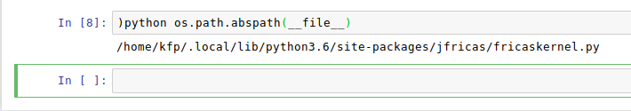

Basic Usage¶
- Reference
Jupyter Notebook (readthedocs)
Start the notebook server from the command line:
jupyter notebook
You should see the notebook open in your browser.
New -> FriCAS¶
Chose the new FriCAS kernel by
New -> FriCAS
If all goes as it should, you will see a similar output when entering the commands as in the picture below.
The console window shows kernel messages, especially it will tell you when the notebook was saved (periodically)
Input¶
- Send key
Shift-Return
You may enter single line code followed by a Shift-Return, i.e. hold
down the Shift key, then press the Return key (note that
-- designates a commment in Fricas).
or appropriately indented multi-line code:
Recall that _ denotes the line continuation character in FriCAS.
There are a lot of features in Jupyter, e.g. running all cells

or a print preview (rendered HTML) which allows you to save the complete
page (including images, javascript and so on) by your browser. For instance,
Save page as in Firefox.
Code inspection¶
- Key
Shift-TAB
Press Shift-TAB to show a pop-up pager that will show the usage of
an operation, provided that it was found (similar as )display operation).
The pager text may be expanded if necessary (mouse click on +):
Accessing the shell¶
- prefix
!
To run a shell command (e.g. ls), put a ! in front of the command.
Note that ! must be the first character in the cell, otherwise it
will not be interpreted as shell prefix character.
You may enter multiple lines, however, ! must still be the first character
in the cell, as already remarked.
The output of the last shell command (at least parts of it) is also
stored in the Fricas variable
__system_result
Python commands¶
- usage
)python
With the fake system command )python, one may evaluate a limited set
of python commands (internally an eval, works only in Jupyter).
For example, getting the IP port of the current Fricas+HT instance:

or, if wou want to know, where the current kernel has been installed:
Remark: If you want to have more access to Python, you could edit the
kernel file and add globals to eval.
Editing files¶
There are may ways to create and edit files during a Jupyter notebook session.
(certainly from the Jupyter main page). You can use the Fricas system
command )edit, provided the shell variable EDITOR has been set, or
you may use any editor by prefixing !, e.g. gedit.
- example
!gedit
Create a new file test.input and enter the function definition
f(x) == x*x
Then save and (optionally) close:
Read the function in by )read and try f(8):
LaTeX output¶
- command
)set output tex on/off
Setting TeX output on, you will see both, algebraic and MathJax
output (right-click on the MathJax output to get a context menu).
You have to turn the plain text output off if you do want the rendered
output only: )set output algebra off
HTML from FriCAS¶
- prefix
$HTML$
There is an experimental feature that allows to return string output from
Fricas which will be rendered as HTML if prefixed with $HTML$:
A string (Type: String) like
"$HTML$<h1>Header"
will appear as HTML header, while
"<h1>Header"
will be displayed as plain text.
Draw¶
The draw commands of Fricas will work as as usually. You may save
the plot as a Postscript file, then convert it to PNG and
eventually insert it into the notebook.
- todo
ps2png
Gnuplot¶
- experimental
todo